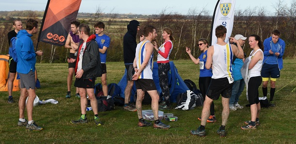

The 3rd race in the 2021/22 Kent Fitness League series took place in Betteshanger Park, Deal on Sunday December 12th, writes Jim Knight. 364 runners, including 25 who had made the long journey from Sevenoaks raced on the 5-mile course involving two laps of the undulating perimeter of the Country Park. Conditions underfoot were muddy, but on the day, it was mild and breezy making for pleasant running.
The race was won by Jonathon Whittall from Maidstone & Medway AC, with the women’s race won by Nicola Evans of Larkfield AC.
An outstanding performance by Sevenoaks women saw them win the team race for the second competition in a row and they retain a slender lead in the series ahead of Canterbury Harriers. Star performer was Cath Linney who came 2nd out of the 131 women and was the fastest W50. The remaining members of the scoring team were Vanessa Gilmartin (11th), Julia Davis (13th), and Pauline Dalton (14th). Other great performances came from Sally Shewell (2nd W60) and Bridget Weekes (3rd W60).
In the men’s race, the Sevenoaks team was weakened by the absence of Allan Lee (injury) and James Mason (suspected covid) but bolstered by the return of veterans James Graham, Duncan Cochrane and John Denyer. However, good runs by Ed Saunders (11th), Andrew Hutchinson (16th), Michael Lochead (30th), and Richard Alford Smith (36th) brought the team home in 5th position with the combined team 3rd, their best placing so far this season. The other scoring members were Dan Witt (56th), Andrew Mead 39th), Andy Evans (141st) and James Graham (148th). Other notable performances came from 17-year-old Harvey Taylor (60th), and John Denyer (1st M70). The men’s team is now in 5th place in the series, the women in 1st place and the combined team in 5th place.
The SAC results were as follows:
| Ov Pos | Lg Pos | Bib | Runner | Age | Time | Club | Rating | # Races |
|---|---|---|---|---|---|---|---|---|
| 11 | 11 | 688 | Edmund Saunders | 39 | 32:22 | Sevenoaks AC | 95.88 | 14 |
| 16 | 16 | 665 | Andrew Hutchinson | 42 | 32:47 | Sevenoaks AC | 93.83 | 14 |
| 30 | 30 | 673 | Michael Lochead | 41 | 34:08 | Sevenoaks AC | 88.07 | 14 |
| 36 | 36 | 637 | Richard Alford-Smith | 45 | 34:32 | Sevenoaks AC | 85.60 | 7 |
| 40 | 39 | 675 | Andrew Mead | 53 | 34:44 | Sevenoaks AC | 84.36 | 41 |
| 57 | 56 | 702 | Daniel Witt | 46 | 35:24 | Sevenoaks AC | 77.37 | 60 |
| 61 | 60 | 694 | Harvey Taylor | 17 | 35:36 | Sevenoaks AC | 75.72 | 3 |
| 66 | 65 | 652 | Chris Fenn | 30 | 35:57 | Sevenoaks AC | 73.66 | 3 |
| 74 | 73 | 676 | Andrew Milne | 39 | 36:30 | Sevenoaks AC | 70.37 | 30 |
| 87 | 2 | 672 | Catherine Linney | 52 | 38:08 | Sevenoaks AC | 99.17 | 37 |
| 104 | 99 | 678 | Shaun Mullen | 45 | 38:58 | Sevenoaks AC | 59.67 | 5 |
| 126 | 11 | 657 | Vanessa Gilmartin | 46 | 39:49 | Sevenoaks AC | 91.74 | 19 |
| 134 | 13 | 647 | Julia Davis | 24 | 40:16 | Sevenoaks AC | 90.08 | 3 |
| 135 | 14 | 645 | Pauline Dalton | 57 | 40:20 | Sevenoaks AC | 89.26 | 52 |
| 165 | 141 | 651 | Andrew Evans | 51 | 41:48 | Sevenoaks AC | 42.39 | 47 |
| 174 | 148 | 659 | James Graham | 68 | 42:19 | Sevenoaks AC | 39.51 | 24 |
| 188 | 155 | 648 | John Denyer | 73 | 43:26 | Sevenoaks AC | 36.63 | 47 |
| 199 | 38 | 691 | Sarah Shewell | 62 | 44:12 | Sevenoaks AC | 69.42 | 115 |
| 206 | 41 | 699 | Bridgit Weekes | 63 | 44:37 | Sevenoaks AC | 66.94 | 13 |
| 220 | 172 | 644 | Duncan Cochrane | 64 | 45:34 | Sevenoaks AC | 29.63 | 35 |
| 263 | 65 | 685 | Ella Pyman | 55 | 48:18 | Sevenoaks AC | 47.11 | 15 |
| 321 | 92 | 639 | Alzbeta Benn | 40 | 53:12 | Sevenoaks AC | 24.79 | 6 |
| 323 | 231 | 667 | Jim Knight | 70 | 53:43 | Sevenoaks AC | 5.35 | 5 |
| 338 | 106 | 638 | Jenny Austin | 44 | 55:56 | Sevenoaks AC | 13.22 | 15 |
| 354 | 115 | 671 | Sylvia Lewis | 69 | 1:02:11 | Sevenoaks AC | 5.79 | 21 |
The full results are here.

More photos, kindly sent by photographer Tom Hooley, are here.
The next race in the series will be in Minnis Bay, Birchington on Sunday January 2nd, 2022.
The Kent Fitness League is a series of cross-country races between the 18 registered Athletics Clubs in Kent. Any number of club members can compete, but 12 are needed to score in the team competition – 8 men (of whom one must be aged 60+, two must be 50+ and two 40+) and 4 women (of whom one must be aged 55+ one 45+ and one 35+).